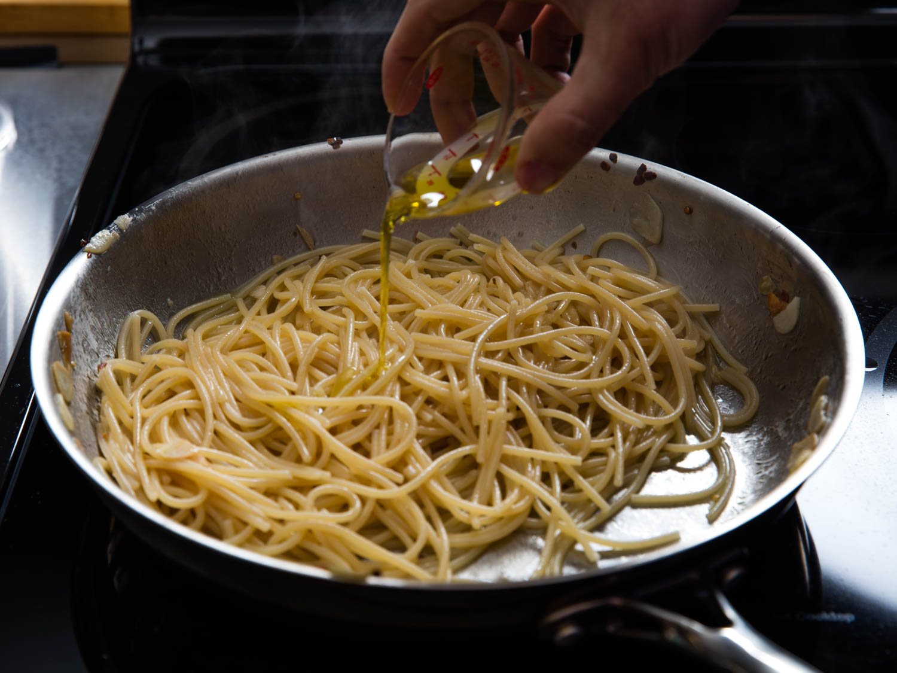
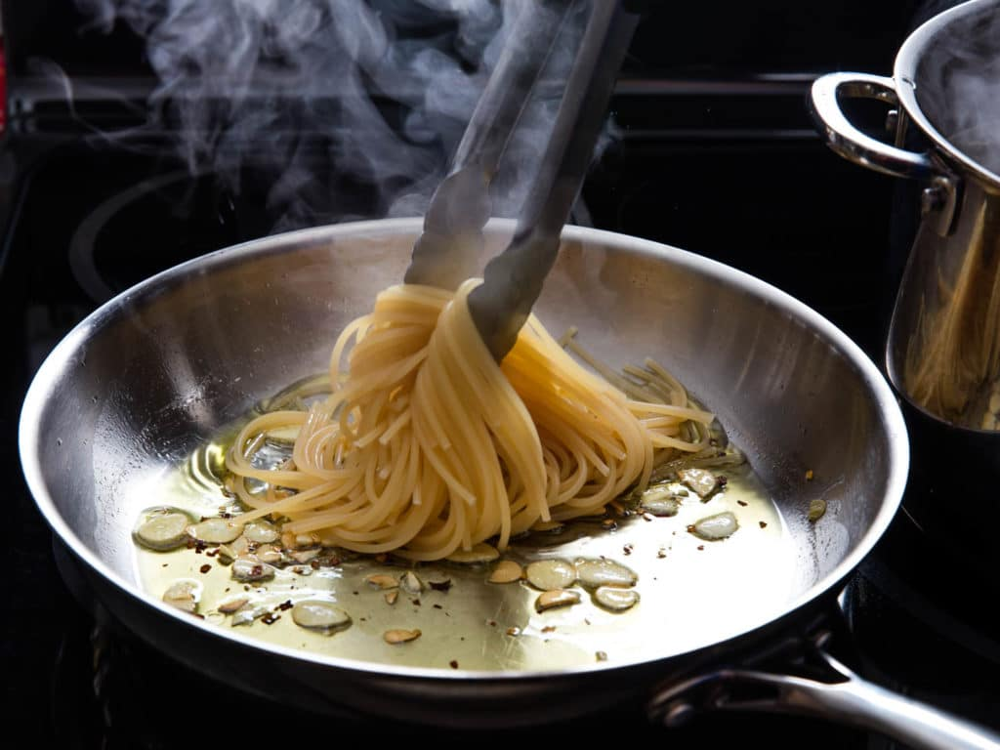

Bring a large pot of lightly salted water to a boil. Cook spaghetti in the boiling water, stirring occasionally until cooked through but firm to the bite, about 12 minutes. Drain and transfer to a pasta bowl.
Combine garlic and olive oil in a cold skillet. Cook over medium heat to slowly toast garlic, about 10 minutes. Reduce heat to medium—low when olive oil begins to bubble. Cook and stir until garlic is golden brown, about another 5 minutes. Remove from heat.
Stir red pepper flakes, black pepper, and salt into the pasta. Pour in olive oil and garlic, and sprinkle on Italian parsley and half of the Parmigiano—Reggiano cheese; stir until combined.
Serve pasta topped with the remaining Parmigiano—Reggiano cheese.

Add olive oil into the pasta

Stir red pepper flakes, black pepper, garlic and salt into the pasta
“No two spaghetti aglio e olio recipes are alike, but this one is pretty true to the classic method. The key is slowly toasting the garlic slices to a perfect golden—brown in the olive oil. If it’s too light, you don’t get the full flavor and if it’s too dark it gets bitter. My advice? Do it perfectly”